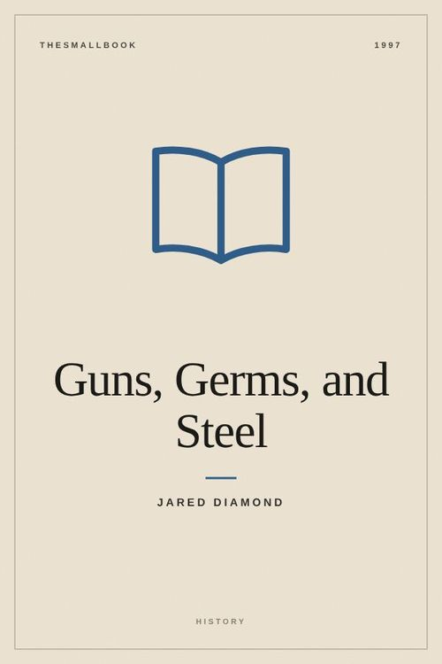

Why Did The Dust Bowl: Farming the Sky Away Fail?
The Decade the Sky Rained Dirt
What happened
In the 1930s the southern Great Plains of the United States, ploughed up in a wheat boom and then struck by drought, began to blow away. Decades of deep ploughing, encouraged by war prices, tractor credit and real estate promotion, had destroyed the native grassland whose roots had held the soil through dry centuries. When drought came, there was nothing left to hold it. Black blizzards of topsoil buried fences, houses and lungs; on Black Sunday, 14 April 1935, a single storm turned noon to midnight across several states, and dust from the plains fell on Washington, D.C. while Congress debated soil conservation, the era's most effective lobbying, delivered by the sky itself. Some 2.5 million people left the plains states in the decade, the largest migration in American history, into a California that did not want them. Hundreds of thousands of farms failed. The federal response created the Soil Conservation Service, taught contour ploughing and strip farming, planted shelterbelts of trees, and bought back submarginal land, stabilising much of the region by the 1940s, with help from returning rain. The autopsy is of a feedback loop: incentives paid men to plough the protection off the land, and the bill arrived addressed to their children.
The fatal mistake
The economics paid for the catastrophe in advance: homestead laws sized for humid farming, wheat prices, and land speculation all rewarded breaking sod that should never have been broken, and punished the restraint that looked like laziness to neighbours. Mechanisation multiplied the exposure, one tractor erasing in a season the work of grass over centuries. Science and government promoted settlement with rainfall theories that told farmers what they wanted to hear. When drought came, tenancy and debt forced continued cropping of dying land, because the bank's calendar outranks the soil's. No villain twirled a moustache; the ledger itself was the villain, and it paid quarterly.
The lesson
Incentives are environmental policy whether or not they mention the environment: subsidise the ploughing and you will get the dust. Every landscape has a use it cannot survive, and the people farming it are usually the last who can afford to stop. Conservation arrived when the victims' topsoil physically entered the legislature: feedback must be made that tangible, that fast, by measurement and storytelling, before a system corrects. And beware development theories that flatter settlement. The rain did not follow the plough; it simply left, as it periodically does, to audit what the plough had done.
The antidote book

Why did Eurasians conquer the Americas and not the reverse? Not biology or genius: the accident of geography gave some peoples domesticable plants and animals first, and with them, germs, technology and immunities that...
READ THE SUMMARY OPEN INTERACTIVE BOOKQuestions people ask about The Dust Bowl: Farming the Sky Away
Why did The Dust Bowl: Farming the Sky Away fail? The economics paid for the catastrophe in advance: homestead laws sized for humid farming, wheat prices, and land speculation all rewarded breaking sod that should never have been broken, and punished the restraint that looked like laziness to neighbours. Mechanisation multiplied the exposure, one tractor erasing in a season the work of grass over centuries. Science and government promoted settlement with rainfall theories that told farmers what they wanted to hear. When drought came, tenancy and debt forced continued cropping of dying land, because the bank's calendar outranks the soil's. No villain twirled a moustache; the ledger itself was the villain, and it paid quarterly.
How much was lost? 300,000 people driven off the plains by the sky itself
What is the lesson? Incentives are environmental policy whether or not they mention the environment: subsidise the ploughing and you will get the dust. Every landscape has a use it cannot survive, and the people farming it are usually the last who can afford to stop. Conservation arrived when the victims' topsoil physically entered the legislature: feedback must be made that tangible, that fast, by measurement and storytelling, before a system corrects. And beware development theories that flatter settlement. The rain did not follow the plough; it simply left, as it periodically does, to audit what the plough had done.
The Dust Bowl: Farming the Sky Away kyun fail hua? In simple English: The economics paid for the catastrophe in advance: homestead laws sized for humid farming, wheat prices, and land speculation all rewarded breaking sod that should never have been broken, and punished the restraint that looked like laziness to neighbours.... The cost was 300,000 people driven off the plains by the sky itself.
Keep digging
More historical failures · Open the full Graveyard
Read the antidote book summary: Guns, Germs, and Steel
Related failures
- Why did The Churning of the Ocean fail? ~5000 BCE (epic) · The Great Co-operation That Produced the Poison First
- Why did The Nanda Empire fail? ~321 BCE · The Richest Empire in India, Lost Because the King Couldn't Keep a Promise
- Why did The Kurukshetra War fail? ~3000 BCE (epic) · The War Everyone Wanted That Destroyed Everyone Who Wanted It
- Why did The Harappan Collapse fail? ~1900 BCE · The Advanced Civilization That Vanished Into Its Own Success
- Why did Easter Island fail? ~1600 · They Cut Down the Last Tree
- Why did Qin Shi Huang fail? 210 BC · The Emperor Who Drank Immortality to Death
They paid full price. You get the lesson in simple English.